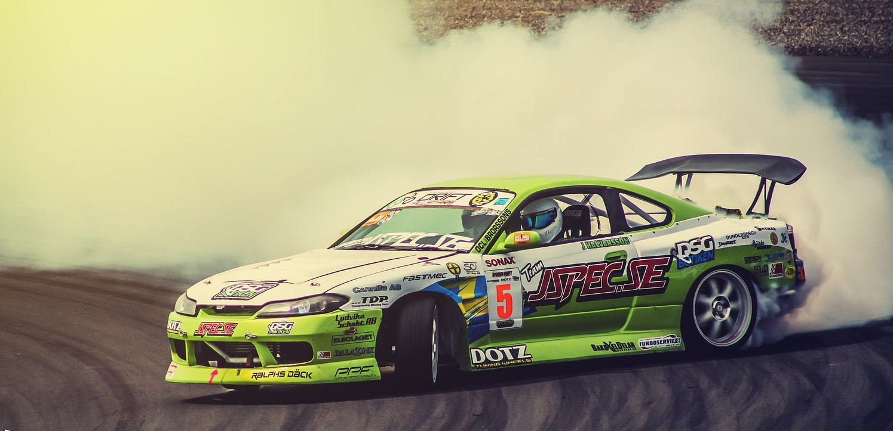
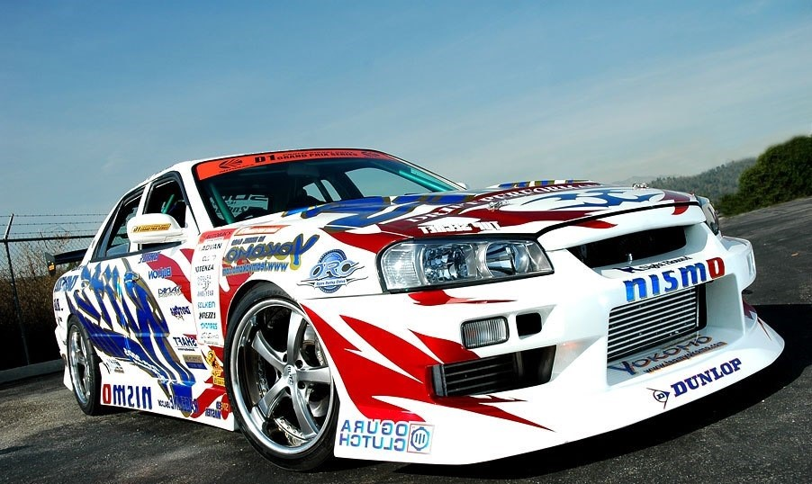
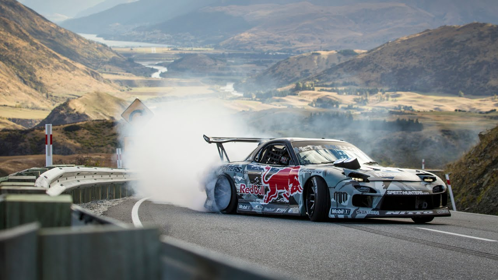

Автомобілі для дрифту: що потрібно знати
Теоретично, будь-який автомобіль може бути використаний для дрифту. Однак, найбільш ефективними в цьому виді спорту є автомобілі з заднім приводом. Також повнопривідні автомобілі можуть показувати хороші результати в дрифті. Ідеально, щоб автомобіль був оснащений механічною коробкою передач, що дозволяє водію максимально контролювати його потенціал. Повний контроль над передачами та зчепленням є необхідним для досягнення високих результатів у дрифті.
Професійні дрифт-кари часто використовують спеціальні диференціали, які допомагають збалансувати потужність між передньою і задньою осями. Крім того, такі автомобілі зазвичай не оснащені допоміжними системами, як-от ABS (антиблокувальна система гальм) чи TCS (трекшн-контроль), що дозволяє водіям зберігати повний контроль над автомобілем.
Бренди Toyota і Nissan є основними постачальниками автомобілів для дрифтерів. У 1980-х роках саме ці марки пропонували велику кількість доступних моделей із заднім приводом. Легендарний автомобіль для дрифту – Toyota Corolla Trueno AE86, також відомий як «хачіроку» (японське слово для цифр 8 і 6). Він мав добре збалансоване шасі, передній двигун і задній привід, легку вагу та помірну потужність 130 к.с. (160 к.с. з суперчарджером). Trueno AE86 здобув популярність завдяки серіалу Initial D і досі високо цінується в Японії.

Toyota AE86
Серед автомобілів марки Nissan, популярними в дрифті є Silvia S13, 180SX (також відомий як 200SX у Великій Британії) та SilEighty, що поєднує передок від Silvia S13 і кузов 180SX. Задній привід і двигуни CA18 або SR20DET роблять ці автомобілі ідеальними для дрифту. Хоча наступне покоління Silvia (S14) не стало таким популярним, Silvia S15, оснащена двигуном SR20DET і механічною коробкою передач, здобула популярність серед дрифтерів завдяки своїй потужності (250 к.с.) і диференціалу підвищеного тертя.

Nissan Silvia S15
Наприклад, Skyline R34 Blitz активно бере участь у чемпіонаті D1. 
Nissan Skyline ER34
Седани на основі Skyline, такі як модифікації з двигуном RB20DET, а також Mazda RX-7, зокрема серії FC3 і FD3, демонструють вражаючі результати. Легкий роторний двигун Mazda RX-7 забезпечує ідеальний розподіл ваги, що робить її дуже популярною у дрифті. Mazda RX-7 FD3 навіть виграла японський чемпіонат D1 Grand Prix Championship у 2003 році.
